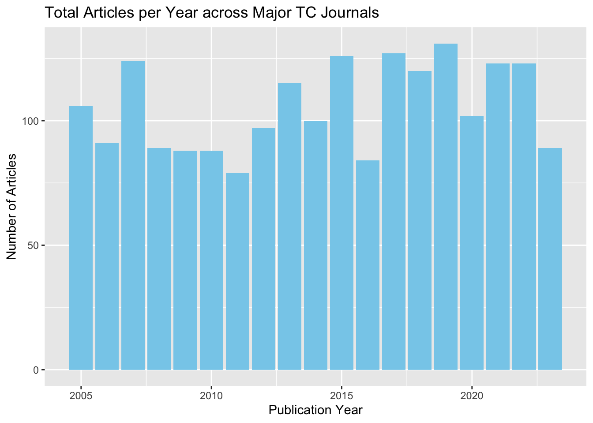

Wk 05: Titles in TC Journals, pt. 1
Overview
Here, we prepare a dataset consisting of article metadata for five major tc journals:
- Journals: Technical Communication Quarterly (TCQ), Technical Communication (TC), Journal of Technical Writing and Communication (JTWC) , Communication Design Quarterly (CDQ), and Journal of Business and Technical Communication (JBTC)
- Years: 2005 - 2023
- Article Metadata: Journal, Authors, Title, Abstract, Publication Year
Prepare data
We need to drop written comm from our “full data” and read in and clean bibtex data from Communication Design Quarterly and Journal of Technical Writing and Communication
Load libraries
First, we’ll read in CDQ.
Code
# CDQ: read in and clean names
cdq_raw <- bib2df("data/acm-cdq.bib")%>%
clean_names()
head(cdq_raw)# A tibble: 6 × 33
category bibtexkey address annote author booktitle chapter crossref edition
<chr> <chr> <chr> <chr> <list> <chr> <chr> <chr> <chr>
1 ARTICLE 10.1145/356… New Yo… <NA> <chr> <NA> <NA> <NA> <NA>
2 ARTICLE 10.1145/350… New Yo… <NA> <chr> <NA> <NA> <NA> <NA>
3 ARTICLE 10.1145/350… New Yo… <NA> <chr> <NA> <NA> <NA> <NA>
4 ARTICLE 10.1145/350… New Yo… <NA> <chr> <NA> <NA> <NA> <NA>
5 ARTICLE 10.1145/350… New Yo… <NA> <chr> <NA> <NA> <NA> <NA>
6 ARTICLE 10.1145/348… New Yo… <NA> <chr> <NA> <NA> <NA> <NA>
# ℹ 24 more variables: editor <list>, howpublished <chr>, institution <chr>,
# journal <chr>, key <chr>, month <chr>, note <chr>, number <chr>,
# organization <chr>, pages <chr>, publisher <chr>, school <chr>,
# series <chr>, title <chr>, type <chr>, volume <chr>, year <dbl>,
# issue_date <chr>, url <chr>, doi <chr>, abstract <chr>, numpages <chr>,
# keywords <chr>, issn <chr>Second, we’ll read in JWTC.
Code
# JWTC: read in and clean names
jtwc_raw <- bib2df("data/jtwc.bib")%>%
clean_names()
head(jtwc_raw)# A tibble: 6 × 30
category bibtexkey address annote author booktitle chapter crossref edition
<chr> <chr> <chr> <chr> <list> <chr> <chr> <chr> <chr>
1 ARTICLE 17004768420… <NA> <NA> <chr> <NA> <NA> <NA> <NA>
2 ARTICLE 17004768320… <NA> <NA> <chr> <NA> <NA> <NA> <NA>
3 ARTICLE 17004768220… <NA> <NA> <chr> <NA> <NA> <NA> <NA>
4 ARTICLE 17004768720… <NA> <NA> <chr> <NA> <NA> <NA> <NA>
5 ARTICLE 17004768520… <NA> <NA> <chr> <NA> <NA> <NA> <NA>
6 ARTICLE 17004768620… <NA> <NA> <chr> <NA> <NA> <NA> <NA>
# ℹ 21 more variables: editor <list>, howpublished <chr>, institution <chr>,
# journal <chr>, key <chr>, month <chr>, note <chr>, number <chr>,
# organization <chr>, pages <chr>, publisher <chr>, school <chr>,
# series <chr>, title <chr>, type <chr>, volume <chr>, year <dbl>,
# abstract <chr>, issn <chr>, keywords <chr>, url <chr>Third, we’ll read in our full data and drop WC
Unify the dataset
For this analysis, we want consistent data and column names for each journal in the dataset. Here are the datapoints, using the column names from our preexisting data:
- source_title
- author_full_names
- article_title
- abstract
- publication_year
- abbreviation
Let’s select the target fields, add the journal abbreviation, and rename the columns to harmonize the data with our preexisting set.
Code
#glimpse(cdq_raw)
# select fields to keep; add an abbreviation column; rename columns
cdq_select <- cdq_raw %>%
select(journal,
author,
title,
abstract,
year) %>%
mutate(abbreviation = "CDQ")%>%
rename(source_title = journal,
author_full_names = author,
article_title = title,
abstract = abstract,
publication_year = year,
abbreviation = abbreviation)%>%
mutate(author_full_names = map_chr(author_full_names, ~ paste(.x, collapse = "; ")))
glimpse(cdq_select)Rows: 336
Columns: 6
$ source_title <chr> "Commun. Des. Q. Rev", "Commun. Des. Q. Rev", "Commu…
$ author_full_names <chr> "Carter, Daniel", "York, Eric J.", "Davis, Katlynne;…
$ article_title <chr> "Constructing Structured Content on WordPress: Emerg…
$ abstract <chr> "Web content management systems (WCMSs) are widely u…
$ publication_year <dbl> 2023, 2022, 2022, 2022, 2022, 2022, 2021, 2021, 2020…
$ abbreviation <chr> "CDQ", "CDQ", "CDQ", "CDQ", "CDQ", "CDQ", "CDQ", "CD…Now the same for JTWC!
Code
#glimpse(jtwc_raw)
# select fields to keep; add an abbreviation column; rename columns
jtwc_select <- jtwc_raw %>%
select(journal,
author,
title,
abstract,
year) %>%
mutate(abbreviation = "JTWC")%>%
rename(source_title = journal,
author_full_names = author,
article_title = title,
abstract = abstract,
publication_year = year,
abbreviation = abbreviation)%>%
mutate(author_full_names = map_chr(author_full_names, ~ paste(.x, collapse = "; ")))
glimpse(jtwc_select)Rows: 452
Columns: 6
$ source_title <chr> "Journal of Technical Writing & Communication", "Jou…
$ author_full_names <chr> "Getto, Guiseppe; Flanagan, Suzan; Labriola, Jack"…
$ article_title <chr> "Introduction to Special Issue: The People, Practice…
$ abstract <chr> "This special issue of the Journal of Technical Writ…
$ publication_year <dbl> 2023, 2023, 2023, 2023, 2023, 2023, 2023, 2023, 2023…
$ abbreviation <chr> "JTWC", "JTWC", "JTWC", "JTWC", "JTWC", "JTWC", "JTW…Now we can join the three
Rows: 2,002
Columns: 6
$ source_title <chr> "JOURNAL OF BUSINESS AND TECHNICAL COMMUNICATION", "…
$ author_full_names <chr> "Wickman, Chad", "DeJeu, Emily Barrow", "DeVasto, Da…
$ article_title <chr> "Genre and Metagenre in Biomedical Research Writing"…
$ abstract <chr> "The use of reporting guidelines is an established y…
$ publication_year <dbl> 2023, 2022, 2016, 2009, 2009, 2020, 2016, 2012, 2011…
$ abbreviation <chr> "JBTC", "JBTC", "JBTC", "JBTC", "JBTC", "JBTC", "JBT…Check work: Plot the data
Code
# Plot 1: Count of observations by journal abbreviation
tc_journals %>%
count(abbreviation) %>%
ggplot(aes(x = reorder(abbreviation, n), y = n)) +
geom_bar(stat = "identity", fill = "skyblue") +
coord_flip() +
labs(title = "Articles published (2005-2023) in major TC Journals", x = "Journal", y = "Articles")Code
# Plot 2: Bar chart of the number of articles published per year, colored by journal abbreviation
tc_journals %>%
group_by(publication_year, abbreviation) %>%
summarise(num_articles = n()) %>%
ggplot(aes(x = publication_year, y = num_articles, fill = abbreviation)) +
geom_bar(stat = "identity") +
labs(title = "Articles Published per Year, by Journal Abbreviation", x = "Publication Year", y = "Number of Articles") +
scale_fill_discrete(name = "Journal Abbreviation")Code
# Plot 3: Dot plot of the number of articles published per year, colored by journal abbreviation with trend lines
tc_journals %>%
group_by(publication_year, abbreviation) %>%
summarise(num_articles = n()) %>%
ggplot(aes(x = publication_year, y = num_articles, color = abbreviation)) +
geom_point(size = 2) +
geom_smooth(method = "lm", se = FALSE, size = .7, aes(group = abbreviation), linetype = "dashed") +
labs(title = "Articles Published per Year, by Journal Abbreviation", x = "Publication Year", y = "Number of Articles") +
scale_color_discrete(name = "Journal Abbreviation")Code
# Plot 4: Bar chart of articles per year
tc_journals %>%
group_by(publication_year) %>%
summarise(num_articles = n()) %>%
ggplot(aes(x = publication_year, y = num_articles)) +
geom_bar(stat = "identity", fill = "skyblue") +
labs(title = "Total Articles per Year across Major TC Journals", x = "Publication Year", y = "Number of Articles")